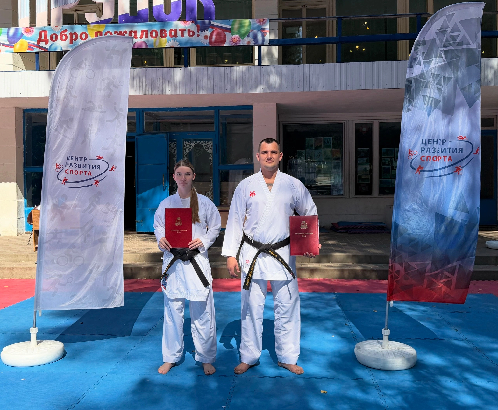

Детская база
Для тех, кто только знакомится с залом. Координация, гибкость, дисциплина и первые элементы каратэ.
Можно начать с нуля Уточнить группуКурск · каратэ WKC · дети 4+
Каратэ для детей от 4 лет, подростков и взрослых. Учимся двигаться, держать внимание и спокойно расти в своём темпе.

О клубе
В Федерации каратэ WKC Курской области техника соединяется с понятными правилами зала: слушать, пробовать, уважать партнёра и не бросать после первой ошибки.
База, кихон, ката и поединки без спешки и хаоса.
Регулярность, уважение к партнёру и ответственность за свою работу.
Ребёнок растёт рядом с группой, но без сравнения и лишнего давления.
С чего всё началось
У клуба нет придуманной легенды с громкими датами. Есть ежедневная работа: первые тренировки, первые старты, новые пояса и команда, которая остаётся рядом.

Ребёнок впервые приходит в зал и знакомится с тренером, правилами и партнёрами.

База, координация и привычка регулярно возвращаться к работе.
Для тех, кто готов: опыт выхода на татами, волнения и честного результата.

Старшие поддерживают младших, а тренер помогает двигаться дальше.
Общие тренировки для детей, подростков и взрослых в Курске.
Тренировки
Можно прийти с нуля. Тренер подберет нагрузку и объяснит, в какую группу лучше встать.
Для тех, кто только знакомится с залом. Координация, гибкость, дисциплина и первые элементы каратэ.
Можно начать с нуля Уточнить группуДля подростков с разным уровнем подготовки: техника, физическая форма и постепенная работа со спаррингами.
Цели и темп подбирает тренер Уточнить группуКаратэ как тренировка тела, концентрации и личного режима. Без требования иметь опыт.
Подходит для первого шага Уточнить группуЧто получает ребёнок
Каратэ не обещает мгновенных перемен. Оно даёт ребёнку понятную практику: повторять, слушать, взаимодействовать и видеть свой прогресс.
Техника важнее силы
Что такое каратэ
ВниманиеРебёнок учится слушать задачу, замечать детали и удерживать фокус.
КонтрольСначала точность, баланс и понятное движение. Сила появляется постепенно.
УважениеРабота с партнёром формирует спокойное отношение к границам и правилам.
СамостоятельностьОшибки становятся частью пути: важно понять их и попробовать ещё раз.
Наши тренеры
Откройте карточку, чтобы узнать путь тренера, достижения и работу с воспитанниками.

Старший тренер

Президент Федерации каратэ WKC Курской области
Первый шаг
Первое занятие помогает ребенку спокойно понять зал, тренера и формат группы. Без покупки кимоно, без спаррингов и без давления абонементом.
Тренер встречает семью, показывает зал и уточняет возраст, опыт и цель занятий.
Лёгкая разминка и упражнения на координацию. Нагрузка идёт по самочувствию.
Простые движения и работа на мягкой лапе, чтобы почувствовать ритм тренировки.
После занятия можно задать вопросы тренеру и обсудить самочувствие ребёнка.
После занятия тренер объясняет, какой зал, возрастная группа и темп занятий подойдут лучше.
Результаты
Для клуба результат — это медали, новые пояса, уверенность перед стартом и привычка ребенка не бросать после первой ошибки.
Цифры за соревновательный сезон 2025/2026.
Опыт соревнований помогает спортсменам держать фокус, справляться с волнением и видеть прогресс в регулярной работе.
Ученики учатся выходить на татами спокойно, уважать соперника и принимать результат без паники.
Аттестации дают понятную лестницу целей: техника, дисциплина, регулярность и личный прогресс.
Старшие поддерживают младших, а тренер помогает каждому двигаться в своем темпе.
Доверие
Мы заранее отвечаем на практичные вопросы: как проходит первое занятие, кто ведет группу, какая нагрузка подходит ребенку и как родитель может оценить атмосферу в зале.
Новичок знакомится с залом, тренером и базовыми движениями. Нагрузка подбирается по возрасту и самочувствию.
После тренировки тренер объясняет, какая группа подойдет и что стоит развивать в первые недели.
Дисциплина, уважение и спортивный результат идут вместе с поддержкой ребенка и нормальным темпом адаптации.
«Главная задача тренера — помочь ученику стать сильнее не только на татами, но и в обычной жизни».Дмитрий Плохих, президент Федерации WKC
Фотодневник клуба
Фотографии ведут в альбомы клуба, где можно увидеть больше реальной жизни секции: занятия, турниры, сборы и награждения.
Контакты
Напишите в VK или позвоните тренеру. Подскажем ближайшую группу, адрес зала и что взять с собой на первое занятие.
Дмитрий Юрьевич. Звонок или сообщение в удобное время.
Сообщество VK клубаНовости, фото, объявления и запись на пробную тренировку.
Адрес ТЦ Пушкинский, 4 этажВторник, четверг, суббота · 16:00-19:00
FAQ
Собрали вопросы, которые обычно задают родители перед первым визитом: возраст, форма, присутствие на занятии и соревнования.
Обычно берем детей с 4 лет. Тренер смотрит, насколько ребенку комфортно слушать инструкции, двигаться в группе и адаптироваться к залу.
Нет. На первое занятие достаточно спортивной формы, воды и сменной обуви до татами. По кимоно и защите тренер сориентирует после пробной тренировки.
Да. Новичку подбирают простые упражнения и понятный темп. Сложные элементы, спарринги и турнирная подготовка появляются постепенно.
На первом визите родитель может посмотреть зал, задать вопросы тренеру и понять, как ребенок чувствует себя в новой среде.
Да, если ребенок готов и хочет спортивного пути. Но базовая цель клуба шире: техника, дисциплина, здоровье, уверенность и уважение к партнеру.
Обычно на первое пробное занятие справка не требуется: достаточно стандартного разрешения от врача при наличии хронических заболеваний. При постоянных тренировках или участии в соревнованиях клуб может попросить справку от педиатра или терапевта — тренер заранее сообщит, когда именно это нужно.